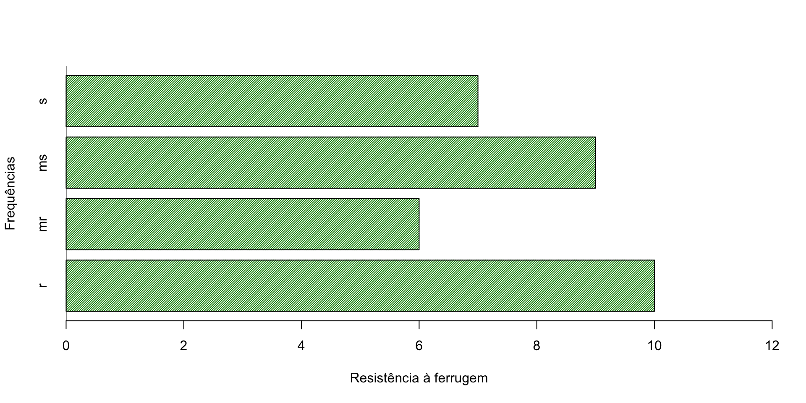

Descritiva: é a área da estatística que aplica várias técnicas para descrever e resumir um conjunto de dados. Os elementos básicos para esta análise são: tabelas, gráficos e medidas numéricas.
Indutiva: cuida da análise e interpretação dos dados. Tem como objetivo tirar conclusões sobre a população com base nos resultados observados em amostras extraídas dessa população.
Variáveis e Dados
Variável: é um atributo, mensurável ou não, sujeito à variação quantitativa ou qualitativa, no interior de uma população ou amostra.
Dados: são informações inerentes às variáveis que caracterizam os elementos que constituem a população ou a amostra em estudo.
Tipos de variáveis
Qualitativa
Nominal - Gênero, estado civil, tipo de grão (dentado,semidentado e semiduro)…
Ordinal - Grau de escolaridade, resistência à ferrugem (r\(>\)mr\(>\)ms\(>\)s)1…
Quantitativa
Discreta - Nº de filhos, nº de grãos por vagem e nº de vagens por planta…
Contínua - Peso, Altura da planta e altura da espiga…
Hibrido Rendimento Ciclo Altura_planta Altura_espiga Grao Resistencia
1 1 6388 65 242 103 dentado r
2 2 6166 65 258 134 semidentado r
3 3 6047 65 240 104 semidentado s
4 4 5889 66 243 108 semidentado s
5 5 5823 69 257 128 dentado ms
6 6 5513 68 241 108 semidentado s
Dados Brutos: são dados obtidos diretamente da pesquisa, sem terem passados por nenhum processo de síntese ou análise.
Rol: são os dados colocados em ordem crescente.
Dados Brutos
Alturas de espigas (cm) de híbridos de milho para a região de Chapecó, SC - safra: 1987/1988
103
128
123
110
134
110
104
120
134
108
117
138
140
128
109
118
104
108
114
149
140
124
137
119
108
103
111
151
139
129
141
138
103
128
123
110
134
110
104
120
134
108
117
138
140
128
109
118
104
108
114
149
140
124
137
119
108
103
111
151
139
129
141
138
Rol
Alturas de espigas (cm) de híbridos de milho para a região de Chapecó, SC - safra: 1987/1988
103
103
104
104
108
108
108
109
110
110
111
114
117
118
119
120
123
124
128
128
129
134
134
137
138
138
139
140
140
141
149
151
103
103
104
104
108
108
108
109
110
110
111
114
117
118
119
120
123
124
128
128
129
134
134
137
138
138
139
140
140
141
149
151
Representação Tabular
Título: índica a natureza do fato estudado, as variáveis escolhidas na análise do fato, o local e época.
Corpo: é o conjunto de linhas e colunas que contém, respectivamente, as séries horizontais e verticais de informações.
Cabeçalho: designa a natureza do conteúdo de cada coluna.
Coluna indicadora: mostra natureza do conteúdo de cada linha.
Distribuições de frequências de variáveis qualitativas e representações gráficas
Uma tabela de distribuição de frequências é a correspondências entre as categorias ou valores de uma variável e as respectivas frequências que foram observadas.
Para esse tipo de variável os gráficos mais utilizados são: colunas, barras e de setores.
Tabela: Distribuição de Frequências da resistência à ferrugem de 32 híbridos de milho recomendados para a região de Chapecó, safra- 1987/88.
barplot(table(dados$Resistencia)[c("r","mr","ms","s")],xlab="Resistência à ferrugem",ylab="Frequências",col="green4",density=50,ylim=c(0,12))abline(h=0)
Figura: Resistência à ferrugem de híbridos de milho, para a região de Chapecó, 1987/88
Gráficos para variáveis qualitativas - Barras
Code
barplot(table(dados$Resistencia)[c("r","mr","ms","s")],xlab="Resistência à ferrugem",ylab="Frequências",col="green4",density=50,xlim=c(0,12),horiz = T)abline(v=0)

Figura: Resistência à ferrugem de híbridos de milho, para a região de Chapecó, 1987/88
Figura: Resistência à ferrugem de híbridos de milho, para a região de Chapecó, 1987/88
Exercícios
Construa uma tabela de distribuição de frequências para a variável “Tipo de grão” de um experimento de competição de híbridos de milho para a região de Chapecó, SC - safra: 1987/1988 (ANDRADE; OGLIARI, 2010, p. 62) e ilustre dois gráficos indicados.
Distribuições de frequências de variáveis quantitativas discretas e representações gráficas
Tabelas de distribuições de frequências para variáveis quantitativas discretas são semelhantes a tabelas de distribuições de frequências para variáveis qualitativas.
Para esse tipo de variável os gráficos mais utilizados são: bastão, barras e de colunas.
Exercícios
Construa a tabela de distribuição de frequências para a variável “Ciclo” de um experimento de competição de híbridos de milho para a região de Chapecó, SC - safra: 1987/1988 (ANDRADE; OGLIARI, 2010, p. 62).
Distribuições de frequências de variáveis quantitativas contínuas e representações gráficas
Calcular a amplitude total dos dados: \[A_t=nº\ do\ maior - nº\ do\ menor = x_{max}-x_{min}.\]
Não existindo um critério “rígido” para estabelecer o número de intervalos, sugere-se não utilizar menos de 5 e não mais de 15 intervalos. \[k=\sqrt(n),\ \ \ \mbox{ou}\ \ \ k=\sqrt(n)-1, \ \ \ \mbox{ou} \ \ \ k=1+3,3log(n).\]
O intervalo das classes pode ser feito dividindo-se a amplitude total pelo número de classes: \[a_c=\frac{A_t}{k}.\]
Tabela: Distribuição de frequências dos rendimentos médios, em kg/ha, de 32 híbridos de milho recomendados para o Oeste catarinense, 1987/88}
A representação gráfica de dados relativos a uma variável contínua, apresentado em uma tabela com classes de frequências, pode ser feita através de:
Histograma
Polígono de frequências
Histograma
Code
s=seq(min(dados$Rendimento),6393,484)hist(dados$Rendimento,breaks=s,xaxt="n",ylim=c(0,14),border="black",xlab="Rendimento médio (kg/ha)",density=30, las=1,ylab="Densidade de frequências",col="green4",main="")axis(1,s,line=-.6)abline(h=0,cex=4)
Polígono de frequências
Code
tab=hist(dados$Rendimento,breaks=s,plot=F)pontosmedios=c(3731,tab$mids,6635)fr=c(0,tab$counts,0)plot(pontosmedios,fr,type="l",lwd=2,ylim=c(0,14),xlab="Rendimento médio (kg/ha)",ylab="Densidade de frequência",las=1,bty="l",xaxt="n",axes=F)axis(1,pontosmedios,line=-.6)axis(2,tab$couts,las=1)abline(h=0)
Exercícios
Construa a tabela de distribuição de frequências para a variável “Altura de plantas” de um experimento de competição de híbridos de milho para a região de Chapecó, SC - safra: 1987/1988 (ANDRADE; OGLIARI, 2010, p. 62) e faça os gráficos indicados. Utilizar 6 classes.
Resolução exercício 3.
Tabela: Distribuição de frequências das Altura de plantas de 32 híbridos de milho recomendados para o Oeste catarinense, 1987/88
plot(tab,col="green4",density=50,border="black",xlab ="Altura de Plantas",ylab="Freq. Abs.",las=1)
Medidas Descritivas
Uma outra maneira de resumir os dados de uma variável quantitativa, além de tabelas e gráficos, são apresenta-los na forma de valores numéricos, denominados medidas descritivas.
As medidas descritivas auxiliam a análise do comportamento dos dados. Tais dados são provenientes de uma população ou amostra.
Medidas
Parâmetros
Estatísticas
Nº de elementos
N
n
Média
\(\mu\)
\(\bar{x}\)
Variância
\(\sigma^2\)
\(s^2\)
Desvio Padrão
\(\sigma\)
\(s\)
Medidas de Posição
As medidas de tendência central são assim denominadas por indicarem um ponto em torno do qual se concentram os dados.
Este ponto tende a ser o centro da distribuição dos dados.
As principais medidas de tendência central são: média, mediana e moda.
Média Aritmética
A média aritmética (\(\bar{x}\)) é a soma de todos os valores observados da variável dividida pelo número total de observações.
Sob uma visão geométrica a média de uma distribuição é o centro de gravidade, representa o ponto de equilíbrio de um conjunto de dados.
Média Aritmética
Seja (\(x_1,x_2,...,x_n\)) um conjunto de dados. A média é dada por:\[\mu=\frac{\sum_{i=1}^Nx_i}{N}\ \ \ \mbox{ou}\ \ \ \bar{x}=\frac{\sum_{i=1}^nx_i}{n}.\]
Caso os dados estejam apresentados segundo uma distribuição de frequências, tem-se: \[\mu=\frac{\sum_{i=1}^k\bar{x}_in_i}{N}\ \ \ \mbox{ou}\ \ \ \bar{x}=\frac{\sum_{i=1}^k\bar{x}_in_i}{n}.\]Observe que no caso de dados agrupados a média é obtida a partir de uma ponderação, em que os pesos são as frequências absolutas de cada classe e \(\bar{x}_i\) é o ponto médio da classe \(i\).
Observações
A média é única em um conjunto de dados e nem sempre é igual a um determinado valor observado.
A média é afetada por valores extremos observados.
Quando se observam no conjunto dados discrepantes, faz-se da média uma medida não apropriada para representar os dados.
A soma da diferença de cada valor observado em relação à média é zero, ou seja, a soma dos desvios é zero. \[ \sum_{i=1}^n(x_i-\bar{x})=0\]
Exemplo 1
Calcule a média de Resistência de uvas Niágara.
Tabela: Rol de resistência, em N, de uvas Niágara, fornecida por produtores em 2002
A moda (\(M_o\)) é o valor que apresenta a maior frequência da variável entre os valores observados.
Para o caso de valores individuais, a moda pode ser determinada observando-se a frequência absoluta dos dados.
Moda - Dados agrupados em classes
Tratando-se de uma distribuição de frequências de valores agrupados em classes, a moda é calculada utilizando: \[M_o=l_i+\frac{\Delta_1}{\Delta_1+\Delta_2}a_c\] em que \(\Delta_1\) é a diferença entre a frequência abs. da classe modal e a frequência abs. da classe anterior, \(\Delta_2\) é a diferença entre a frequência abs. da classe modal e a frequência abs. da classe posterior, \(l_i\) é o limite inferior da classe modal e \(a_c\) é a amplitude da classe.
OBS: A moda é mais indicada quando se deseja obter, rapidamente, uma medida de tendência central, e seu valor não é afetado por valores extremos.
Exemplo 3
Utilizando a tabela, em que está apresentada a distribuição de frequências da resistência de uvas, calcule a moda.
Tabela: Distribuição de frequências da resistência de uvas niágara
Calcule a moda da variável “Tipo de grão” do experimento de competição de híbridos de milho para a região de Chapecó, SC.
Mediana
A mediana (\(M_d\)) é o valor que ocupa a posição central da série de observações de uma variável, em rol, dividindo o conjunto em duas partes iguais.
Para calcular a mediana é necessário localizar a posição da mediana. \[L=\frac{n}{2}\]
Se L for decimal, arredonda o seu valor para o maior inteiro mais próximo, e então: \[M_d=x_{L^+}\]
Se L for inteiro, deve-se somar o valor correspondente a L ao valor correspondente a L+1 e dividir por 2 \[M_d=\frac{x_L+x_{L+1}}{2}\]
Exemplo 4
Calcule a mediana de Resistência de uvas Niágara.
Tabela: Rol de resistência, em N, de uvas Niágara, fornecida por produtores em 2002
0,50
0,52
0,54
0,58
0,59
0,61
0,63
0,64
0,64
0,67
0,69
0,70
0,72
0,73
0,73
0,75
0,75
0,76
0,76
0,76
0,76
0,80
0,82
0,82
0,83
0,84
0,87
0,89
0,92
0,94
0,99
1,00
1,04
1,04
1,10
1,80
Code
median(resis)
Mediana - Dados agrupados em classes
Quando os dados estão agrupados em classes, a mediana é calculada utilizando: \[M_d=l_i+\frac{L-F_{an}}{n_{md}}a_c\] em que \(F_{an}\) é a frequência acumulada da classe anterior a classe da mediana e \(n_{md}\) é a frequência absoluta da classe da mediana.
Exemplo 5
Utilizando a tabela, em que está apresentada a distribuição de frequências da resistência de uvas, calcule a mediana.
Tabela: Distribuição de frequências da resistência de uvas niágara
As medidas de dispersão servem para indicar o quanto os dados se apresentam dispersos.
Auxiliam as medidas de posição a descrever o conjunto de dados adequadamente.
Faz-se necessário ao menos uma medida de posição e uma de dispersão para descrever um conjunto de dados.
As principais medidas de dispersão são:
Amplitude
Desvio Médio
Variância
Desvio Padrão
Erro Padrão
Coeficiente de variação
Amplitude
É a diferença entre o maior e o menor valor observado \[A_t=x_{max}-x_{min}\]
Esta medida de dispersão não leva em consideração os valores intermediários perdendo a informação de como os dados estão distribuídos e/ou concentrados.
É muito limitada, pois depende apenas dos valores extremos.
Desvio Médio
A diferença entre cada valor observado e a média é denominado desvio e é dado por \((x_i-\mu)\) ou \((x_i-\bar{x})\).
A soma de todos os desvios é igual a zero, e esta medida não mede a variabilidade dos dados.
Para resolver este problema utiliza-se os valores absolutos dos desvios e calcula a média. \[d_m=\frac{\displaystyle\sum_{i=1}^{N}\left|x_i-\mu \right|}{N}, \ \ \ \mbox{ou}\ \ \ d_m=\frac{\displaystyle\sum_{i=1}^{n}\left|x_i-\bar{x}\right|}{n}\]
Desvio Médio
Caso os dados estejam apresentados seguindo uma distribuição de frequências, tem-se: \[d_m=\frac{\displaystyle\sum_{i=1}^{k}\left|\bar{x}_i-\mu \right|n_i}{N}, \ \ \ \mbox{ou}\ \ \ d_m=\frac{\displaystyle\sum_{i=1}^{k}\left|\bar{x}_i-\bar{x}\right|n_i}{n}\]
Variância
É a medida de variabilidade mais utilizada.
Se ao invés de utilizar os valores absolutos elevarmos os desvios ao quadrado, estaremos enfatizando os grandes desvios em relação a observações mais próximas da média. \[\sigma^2=\frac{\displaystyle\sum_{i=1}^{N}(x_i-\mu)^2}{N}\ \ \ \mbox{ou}\ \ \ s^2=\frac{\displaystyle\sum_{i=1}^{n}(x_i-\bar{x})^2}{n-1}\]\[\sigma^2=\frac{\displaystyle\sum_{i=1}^nx_i^2-\frac{\displaystyle\left(\sum_{i=1}^nx_i\right)^2}{n}}{N}\ \ \ \mbox{ou}\ \ \ s^2=\frac{\displaystyle\sum_{i=1}^nx_i^2-\frac{\displaystyle\left(\sum_{i=1}^nx_i\right)^2}{n}}{n-1}\]
Variância
Caso os dados estejam apresentados segundo uma distribuição de frequências agrupados em classes, tem-se: \[\sigma^2=\frac{\displaystyle\sum_{i=1}^{k}(\bar{x}_i-\mu)^2n_i}{N}\ \ \ \mbox{ou}\ \ \ s^2=\frac{\displaystyle\sum_{i=1}^{k}(\bar{x}_i-\bar{x})^2n_i}{n-1}\]\[\sigma^2=\frac{\displaystyle\sum_{i=1}^k\bar{x}_i^2n_i-\frac{\displaystyle\left(\sum_{i=1}^k\bar{x}_in_i\right)^2}{n}}{N}\ \ \ \mbox{ou}\ \ \ s^2=\frac{\displaystyle\sum_{i=1}^k\bar{x}_i^2n_i-\frac{\displaystyle\left(\sum_{i=1}^k\bar{x}_in_i\right)^2}{n}}{n-1}\]
Ao calcular a variância observa-se que o resultado será dado em unidades quadráticas, o que dificulta a sua interpretação.
Desvio padrão
Uma forma de se obter uma medida de dispersão com a mesma unidade de medida dos dados observados é, simplesmente, aplicar a raiz quadrada na variância, obtendo-se o desvio padrão.
Diferentes amostras retiradas de uma mesma população podem apresentar médias diferentes.
O erro padrão é uma medida da precisão da média amostral. \[\sigma_{\bar{x}}=\displaystyle\frac{\sigma}{\sqrt{n}}\ \ \ \mbox{ou}\ \ \ s_{\bar{x}}=\displaystyle\frac{s}{\sqrt{n}}\]
Coeficiente de variação
O coeficiente de variação expressa a variabilidade dos dados de uma variável de modo independente da sua unidade de medida.
O coeficiente de variação é dado por: \[CV=\frac{s}{\bar{x}}100\]
É utilizada para comparar variabilidades em situações nas quais as médias são muito diferentes.
Sua utilidade está em fornecer uma medida para a homogeneidade de um conjunto de dados.
Exemplo 6
Calcule as medidas de dispersão para as séries A, B e C.
Repetição
Série.A
Série.B
Série.C
1
45
41
25
2
45
42
30
3
45
43
35
4
45
44
40
5
45
45
45
6
45
46
50
7
45
47
55
8
45
48
60
9
45
49
65
Média
45
45
45
Mediana
45
45
45
Exercício 8
Calcule todas as medidas de dispersão das resistências, em N, de uvas Niágaras, fornecidas por produtores na safrinha de 2002.
Tabela: Rol de resistência, em N, de uvas Niágara, fornecida por produtores em 2002
Para melhor entender uma distribuição, pode-se conhecer valores acima ou abaixo dos quais se encontra uma determinada porcentagem dos dados através de medidas separatrizes.
As principais medidas separatrizes são: mediana, quartis, decis e percentis.
Medidas Separatrizes
O percentil de ordem \(100p\) de um conjunto de valores dispostos em ordem crescente é um valor, tal que \(100p\%\) das observações estão nele ou abaixo dele, e \(100(1-p)\%\) estão nele ou acima dele. \((0<p<1)\)
O percentil generaliza qualquer tipo de medida separatriz
O percentil de ordem 50 (\(P_{50}\)) é a mediana.
Os percentis de ordens 25, 50 e 75, (\(P_{25}=Q_1\), \(P_{50}=Q_2\) e \(P_{75}=Q_3\)), são os quartis.
Percentis
Localizar a posição (L). \[L=\frac{in}{100}\] em que \(i\) é o percentual desejado.
Se \(L\) for decimal, arredonda o seu valor para o maior inteiro mais próximo.
Se \(L\) for inteiro, somar o valor correspondente a \(L\) ao valor correspondente a \(L+1\) e dividir o resultado por 2.
Exemplo 8
Calcule os quartis das resistências, em N, de uvas Niágaras, fornecidas por produtores na safrinha de 2002.
Tabela: Rol de resistência, em N, de uvas Niágara, fornecida por produtores em 2002
0,50
0,52
0,54
0,58
0,59
0,61
0,63
0,64
0,64
0,67
0,69
0,70
0,72
0,73
0,73
0,75
0,75
0,76
0,76
0,76
0,76
0,80
0,82
0,82
0,83
0,84
0,87
0,89
0,92
0,94
0,99
1,00
1,04
1,04
1,10
1,80
Code
quantile(resis,probs=c(0.25,.5,.75))
Exercícios 10
Qual são os valores dos \(Q_1\), \(Q_2\), \(Q_3\) e \(D_2\) dos dados abaixo? \[1\ \ 2 \ \ 4 \ \ 5\ \ 7\ \ 8\ \ 10\ \ 11\ \ 14\]
Percentis
Quando os dados estão agrupados em classe, os percentis são calculados utilizando: \[P_i=l_i+\frac{L-F_{an}}{n_{P_i}}a_c\] em que,
\(F_{an}=\) frequência acumulada anterior à classe do \(P_i\);
\(n_{P_i}=\) frequência simples da classe do \(P_i\);
\(L=\frac{in}{100}\) é a posição do percentil;
\(i=1,2,...,99.\)
Exemplo 9
Utilizando a tabela, em que está apresentada a distribuição de frequências da resistência de uvas, calcule os quartis.
Tabela: Distribuição de frequências da resistência de uvas niágara
O objetivo da administração é lucrar o máximo possível com o capital investido em sua empresa. Uma medida de bom desempenho é o retorno sobre os investimentos. A seguir são apresentados os mais recentes retornos